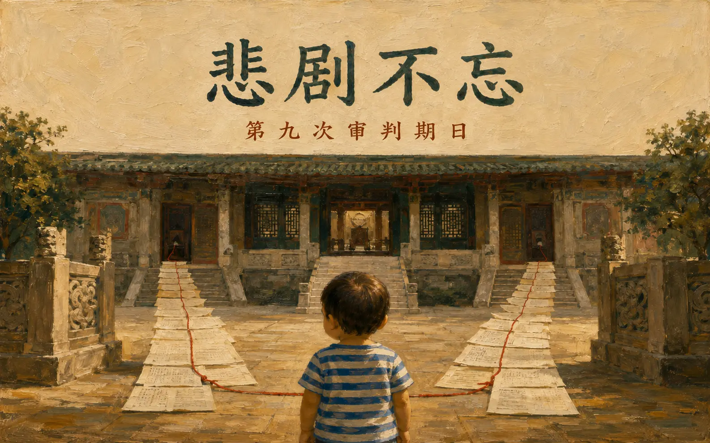

DEFENDANT TESTIMONY · DAY 9
监所关注小组原始纪录护童行动联盟重制导读
第九次审判期日
剀剀案国民法官庭审纪录｜2025年5月6日（二）
同一场科刑调查，两名被告如何描述责任、知情、删除纪录与犯后态度，必须逐句放回证据界线。

本页涉及儿童不当对待、死亡与量刑资料。102组问答依监所关注小组 DAY9 公开纪录及其5页PDF表格重制；原文可见疑似错字或口语转录，完整问答区不自行改写。被告陈述不等于法院认定，艺术主视觉亦不是证据影像。
第九日庭审速览
上午依序讯问刘彩萱与刘若琳，范围涵盖生活与工作背景、责任承认或否认、法会与和解、对孩子伤势的认知、删除纪录及犯后态度。
今天的关键，不是把两份说法混成一份
本页分别保留两名被告的回答，再从责任、知情、删除纪录、法会、角色与修复等七个主题互相勾稽；每一个落差都回到原问答，不替法院判定可信度。
09:33 到 14:10｜程序如何推进
- 续行审理・讯问刘彩萱
辩护人先问生活史、经济、法会、和解与认罪原因；检察官再问托育经验、收入、通报、急诊、Mira与陈述变化。
- 休庭
10:37再入庭，由国民法官、受命法官与审判长接续询问。
- 讯问刘若琳
辩护人问法会、鉴定报告、删除LINE、工作压力与角色；检察官及法官追问否认犯行、知情与介入。
- 休庭
11:31再入庭，续由国民法官、受命法官与审判长询问。
- 上午休庭
14:10入庭；下午处理诉讼参与代理人意见陈述与延押庭，原始纪录注明「下午未参与」。
四条阅读线｜先分清楚陈述属性
背景与动机
收入、负债、家庭互动与工作压力都由本人回答，须与文件及其他证人分开核对。
承认、否认与改口
承认绑缚、否认犯行、称被误会、承认先前说谎，分属不同范围与时间。
法会、删除与和解
宗教仪式、删除纪录、对家属联系及金钱准备不能合并成单一「悔意」。
异议与回答空白
法院制止量刑意见问题时，被告回答栏保持空白，不以辩护人或审判长的话代填。
刘彩萱证词｜从经济动机到责任承认
共73组问答。以下先整理庭上自述脉络，完整原句仍置于问答区。
她称112年9月至12月每月5万多，是人生收入最多的时候；未完整求救或通报，原因包括怕不再派案与失去收入。
她承认警方、检察官侦讯及徐医师鉴定时曾未说真话，理由包括害怕刑事责任与不敢面对。
称法会12天每天参与；30万元由儿盟款项、刘若琳借款与宫主减收各10万元构成，并称曾请律师接触家属但家属无意愿。
在审判长追问下，从「对不起，我错了」进一步回答「应该说是我造成的」，并称造成孩子痛苦与死亡是自己的错。
「应该说是我造成的。」— DAY9・审判长询问刘彩萱
刘若琳证词｜知情范围、删除纪录与持续否认
共29组问答。她谈到法会、鉴定报告、LINE纪录、亲属与工作压力，也持续否认犯行。
称原先只看到头部与喂食方式，医师以图示逐项说明后才知道全身伤势，并后悔没有多问姐姐、多看孩子。
承认对话内容有不适当之处，也承认是自己删除，表示从中学到不应删除纪录。
称自己有教保员证照且为登记者，同时描述婆家事业与亲属用人压力，否认自己必然是主导者。
称澡盆事件使她被误会是共犯；面对检察官追问时仍回答只承认过失伤人，并称「我真的没有打他」。
「是，我真的没有打他。」— DAY9・检察官讯问刘若琳
刘彩萱 × 刘若琳｜证词比对专区
每个来源标签可直达完整问答；每张被引用的问答卡也会生成返回本表的反向连结，形成双向勾稽。
同一主题，分别回到两人的原句
并列只揭示一致、互补或落差，不把两份自述视为已获采信的事实。
比对主题刘彩萱原问答刘若琳原问答证据界线
收入、案源与工作角色
C04｜怕排不到孩子C09｜收入最高时期C40｜未通报原因C41｜未完整求救
自述脉络两人都谈到工作或收入压力，但收入、案源、登记与实际决策权仍须与客观纪录分开核对。
法会目的、资金与告知
C52｜双重目的C70｜30万元来源C72｜需要妹妹协助C73｜称曾说明超渡
R01｜宫主说法与30万元R02｜称未说明原因R21｜借10万元R22｜有时参与
直接落差刘彩萱称曾告知要帮孩子超渡；刘若琳回答「没有」说明原因。两段并列，不替法院决定何者可信。
坦承、隐瞒与删除纪录
C23｜侦讯未说真话C25｜鉴定时仍说谎C50｜承认不够坦诚C62｜对家人与律师隐瞒
各自承认一人承认多个阶段未坦白，一人承认自行删除对话；两者的内容、时间与法律评价不能合并。
对伤势与孩子状态的认知
C46｜急诊医师说法C47｜否认急诊陈述C51｜中午后活动力C53｜称庭上才知死亡风险
R03｜称只看到头与喂食R15｜看伤势不清楚R16｜开庭前未细看R17｜仍否认犯行
各自知情范围这些是两人的自我描述；伤势、死因与可察觉性须回到医疗证词、影像及法院认定。
照顾经验、主导与影响关系
C03｜转做托育C29｜幼儿园地点C30｜三姊妹经营C43｜其他儿童未绑缚
R08｜否认主导R09｜教保员证照R13｜称澡盆个案造成误会
角色争点证照、登记、亲属压力与主导感受各属不同事实；不能只以其中一项决定实际控制或参与程度。
责任承认、否认与悔意
C14｜疏文中的伤害C15｜承认绑缚C23｜承认先前未说真话C68｜「是我造成的」C69｜「是我的错」
R13｜称被误会为共犯R17｜「我真的没有打他」R18｜行为应修正R19｜当时觉得合理R20｜没有想那么多
核心落差刘彩萱在庭上转向承认造成伤害；刘若琳仍否认犯行。认罪、否认、悔意与责任范围须逐项评价。
犯后修复是否成立
C19｜称诚心道歉C21｜家属无和解意愿C22｜保险准备金C69｜庭上悔意C70｜法会资金
R01｜法会叙述R02｜称未说明目的R21｜借款R22｜参与频率R24｜其他家人未参与
不能合并宗教仪式、金钱支出、庭上悔意、向家属道歉与家属接受修复是不同事项，不能互相替代。
量刑鉴定背景另可对照 DAY8 Q46｜责任不下修 与 DAY8 Q59｜条件式复归；DAY8鉴定意见不取代DAY9被告回答。
完整讯问｜左问右答重制
桌机采双栏，手机依序呈现「问题→回答」。问答文字及可见换行依原PDF表格保留；疑似错字不自行更正。唯一未由被告回答的量刑问题，明确标示程序裁定。
显示 102 组问答
111年间是在家制作传统小吃，收入如何？
一般般
具体一点
有（订）单就有收入，一个月有几张单的，平均大概1万，最多是端午节有1万7，这是平均所得，两人（和刘若
琳）平分之后的
为何转做托育？
有照顾妹妹小孩，友人也建议
为何没坚持拒绝带A童？
因为1.床位问题，怕以后排小孩会比较难排、2.没有接到案子，收托减少，收入就会减少
111年到112年4月有负债吗？
自己的偿完了，先生的不太清楚，我没有能力扛，不过问
为何负债？
先生用我名义借贷
多少钱？怎么还？
大概本金百万以上，和银行谈分期
从儿子高中开始，不太记得了
房子是谁的，要缴房租吗？
是姐姐的房子，欠一年多，10来万，姐姐没有跟我要，但希望能尽可能还，不要欠
111年前作小吃时的收入？
111年前大概3万多，111年～112年4月，1万多。112年9月～12月，5万多，是人生收入最多的时候
若儿福联盟说照顾儿童是缘分，不会不派案，那妳会
敢说了吧？
是
疏文是谁拟的？为何？
本来只要在纸上写的，宫主女儿建议我先打出来看看合不合适，才会写上去
用意是什么？
本来是希望助A童往生净土，其他信重建议可以写些其他诉求，最主要是想请仙佛带A童的西方极乐世界
为何用刘若琳的手机传？
12月24日当日手机就被警方扣了
疏文写：「阿姨所犯下的疏失」，妳想的是什么？
开坛时向佛祖禀报，圆坛后烧掉
对他造成的伤害，让他失去宝贵生命
绑他也算吗？
是
疏文内容有告诉任何人吗？
没有
法会谁安排的？谁建议的？
宫主娘建议的
一共办了几天？每天都有去吗？
12天，天天都有参与
是诚心想道歉吗？
是
为何没跟任何人讲？
没有勇气
在看守所请辩护人去谈和解，律师是怎么跟妳回报
的？
找家属和解，说家属没有意愿
谈和解的资金来源？
我有保险习惯，有请辩护人去问保险员，解除价值准备，可以拿到多少，回复说是80-100万元
有承认绑缚、罚站，但不承认有虐待？在警方和检察
官侦讯时也没有说真话，现在为何承认？
是。内心的愧疚日增，没有日减。不敢说真话是因为觉得刑事责任很可怕
现在不觉得了吗？
还是会，但很自责
去年10月跟徐医师鉴定团队还是说谎吗？
是，不敢面对
妳的宗教信仰会怎么认为？
轮回
A童有一天会讨报吗？
我不知道
宗教信仰是认罪原因之一吗？
是
和刘若琳经营幼儿园的地点？
4楼1号、6号1楼，两边打通，后再隔开
三姊妹共同经营的吗？
是
收哪些幼儿？
从0岁到大班，10多人
费用价格？
每个月每位幼儿收1万元
妳算是有经验的，遇到幼儿哭闹调皮不符从要怎么
做？
安抚，然后回报家长
和儿盟的合作？
第一次，当年的5月
也是准备出养的吗？
是，但后来妈妈舍不得就接回去了
为何和儿盟合作？
宫庙女儿、友人赖小姐自己带励馨的孩子，有建议我，所以我有打电话去励馨问，说目前没有小孩，可以先跑程
序（在宅居服申请），另外也提供给我一些其他机构，所以我就主动联络，第二个就联系儿福联盟
受过的训练？
以幼儿为主，以照顾他们的需求为主
A童算是「高需求」幼儿吗？
没听过
自己照顾的幼儿会自撞是不好的？
当时是这样觉得
有通报陈社工吗？
没有，怕不再给小孩
答辩人主张A童难照顾，有完整求救吗？
没有，怕失去收入
有对其他儿童绑缚、包起来等吗？
没有
在A童身上的不法手段是幼儿照顾的教学吗？
不是
1天1千元会否太少？
是
112年12月24日是妳送去万芳医院，医院有请妳联络A
童家人吗？
是我送去的，可联络窗口社工，没办法联络家属
有什么感觉？
紧张感，心跳加快，我不知道
妳跟急诊医生说12月23日食欲、活动都正常？
我记得我没有跟医生接触到，只有警察问我有没有联络到了？
所以急诊黄医师说的不对吗？
不知道，我一直在联络社工，她说她不一定到，但会联络家属
12月26日Mira作证说，你和大姊的儿子去找Mira说不
要跟警察乱说，就说没看到，有这件事吗？
没有，我跟她说，看到什么就说什么，不知道就说不知道
对急诊黄医师Mira的说法，有妨碍侦查的动作吗？
有吧，不够坦诚、勇敢
跟辩护人说A童中午以后活动力不佳？
有
疏文内容是想要避免牢狱之灾，还是送A童引渡到往
生之地？
都有吧
妳说到审判中听吕立医师讲，才知道会造成小孩死
亡？
我是这么认为
那在疏文里所说回答辩护人的呢？
也是
就妳所承认的三条罪是10年1月到无期徒刑，你自己
的意见呢？
被告回答栏空白。
辩护人异议，量刑不该由当事人来说审判长裁定异议成立，量刑是法院的工作
儿福联盟有说多久会找到出养吗？
没有，我不知道
预期会和A童相处多久？
没有办法预期
妳对A童照顾的疏失不会担心排不到床位？
当时没有想那么多
辩护人没让妳看过鉴定报告吗？
有，但是没有仔细看
案发后有跟其他家人说明情形？
忙于法会，没有什么时间相互接触，儿子都很挽回家，先生看电视累了也就睡了
妳大姑有依照妳的口述传LINE给先生？
透过先生，找大姑帮忙找律师
律师要求过程说明纪录，所以12月30日约在民权东／西路的早餐店口述传给律师
妳告诉律师和家人的是不实？
在应该是吧，有所隐瞒的吗
3名子女有住在一起吗？
儿子有，女儿没有。女儿过年会回来，平常她们会主动视讯，1、2个月一次，有时候短短几分钟，有时候超过1
小时
和儿子、先生会聊天、讨论事情吗？
不会
会和大姊聊天吗？
大姊在上班，没有办法，假日会
儿子有给生活费吗？有要过吗？
没有
A童除了额头和绑缚伤势外，妳到现在还是认为是A童
自摔或行为偏差造成的吗？
对不起，我错了
针对问题回答
应该说是我造成的
审理至今的感受？
对孩子的伤害太深，导致他丧失了生命，用不恰当的行为在照顾A童，造成这么大的痛苦，是我的错
办法会的钱从哪里来的？
一共30万元，儿盟给我的钱提领10万，刘若琳帮我10万，宫主我请他做善事10万就不要收了
刘若琳是借妳还是给妳的？
借，我是这样跟她说的
为何要经过刘若琳同意才能办法会？
宫主娘建议的，我没有马上同意，因为我的钱不够。刘若琳愿意帮我，才能去办法会
有刘若琳说为什么要办法会吗？她怎么回应妳？
我说要帮孩子超渡，她说这样很好
宫主是怎么跟妳说要做法会的呢？
她跟我说要做法会，要30万，我叫她去谈谈看可否少一点，后来她来了，跟我说，毕竟一个小孩在妳手中，就这样没了
有说为什么要做法会吗？
没有
妳看到鉴定人的鉴定报告和作证，有什么感
受？
我真的有一点吓到，刘彩萱有幼保经验、有证照，跟我的解释有道理。医师露出来的伤势，我才看怎么会全身都是伤，
我只有看到头、喂食的方式，如果我的察觉力好一点，就可以发现了
有没有什么后悔当初没有做的？
应该多去问姐姐，关心姐姐的状况，多看小孩
4月30日问过有没有删和刘彩萱手机的对话纪
录？
有。第一次碰到这种事情，很紧张，且对话有不适当的
刘彩萱叫妳删的，还是妳自己删的？
我自己删掉的。但我有学到不应该删掉这些纪录
徐医师说妳不太会表达？
确实不太会跟家长沟通，比较都在带小孩
刘彩萱的尔女说妳主导？
因为事业是婆婆的，用娘家的人，只要有一个家长去告状，婆婆就会念我，我真的有压力，婆婆说我娘家的人会偷钱，
一直要我赶走来打工的娘家小孩们
说关系复杂，妳不一定是弱势？
我有教保员证照，刘彩萱是后来慢慢学，所以登记的是我
工作上有我自己的压力，私下她们如果生气，我就不会讲话
报告中有一个30几年的故同好友，认识多久？
从小孩带来给我们照顾开始，她是家长。没有30几年，应该是20几年，没那么久。她是从事保险业务的，在保险上会问
我们要不要投保
有照顾过自闭症的经验？
学生时代有协助过
例如是自闭症小孩，或像是A童这样的状况？
儿盟有问过我要不要，我有想要挑战
是否认为是单纯的个案（澡盆事件），让妳被
误会是凌虐A童的共犯？
我是这样认为
另外有一件起诉的案件，奶嘴的绳子缠绕？
那件事，有传影片给幼儿的阿公看
114年1月21日鉴定报告出来以后，律师有给妳
看过吗？
我有看到伤但没有很清楚，医生到现场用画图画出伤势，一个个说明，我才知道
开庭前有看过吗？
有，但没有很仔细看
还是完全否认犯行，只承认过失伤人？
是，我真的没有打他
审理到现在，姐姐说要保护A童的说法是对的
吗？
有些行为要修正，应该要多上点课
有觉得该在传LINE时劝她不要这样做吗？会
后悔吗？
当下觉得是在抒发她的状况，碰面的时候会解释给我听，觉得合理
姐姐会不会为了发泄，把气出在小孩身上？
我没有想那么多
有借10万元给姐姐吗？
有
有去法会吗？
有时候有去，她每天都会去，我有空就会去
有空的时候是什么时候？
白天，没有特别的事的时候，她问我，就一起去
其他家人有去吗？
我和刘彩萱有去，其他人没有
离婚后和家人感情跟谁比较好？
大姊、刘彩萱
和儿子感情如何？
很好
会聊天吗？
他回家的时候，吃宵夜的时候
聊什么？
学校的事情
和姊妹何时聊天，聊什么？
有碰面的时候
没有符合条件的问答。
监所关注小组原文所附庭期程序表
下图原载于DAY9 PDF第1页，列出第九次审判期日、科刑调查程序与预定时间。本站保留来源脉络，不将程序表视为案件事实的独立证物。

来源、版本与证据界线
监所关注小组〈DAY9｜2025年5月6日（二）第九次审判期日〉及其5页PDF列印档。
查看原始网页 ↗PDF共5页、348,361位元组；SHA-256：165495f66e9d68a857f273e2e2dfcc9c04704f670d8137d9dc676e57e3bc5d55。原始PDF与文字层保留于专案工作来源，不在本页内嵌viewer或提供展开阅读。
完整问答区保留原始表格可见文字，包括口语、异体及疑似转录错字；导读区改用清楚叙述，但不反向覆写原句。
被告回答是自我陈述；辩护人与检察官问题不等于事实；程序裁定不等于被告回答；本页比较是阅读索引，不替代法院判决。